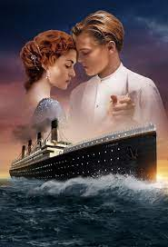

FOREIGNER MOVIE( action thriller film)

What really sets The Foreigner apart, however, is its bizarre version of the current Northern Irish settlement. It can't even stay true to its own internal logic. ... The Foreigner is based on a 1992 thriller by Stephen Leather that mentioned the IRA by name and hung itself around the Harrods bombing of 1983.
characters
An American-British-Chinese co-production, it stars Jackie Chan, Pierce Brosnan, Michael McElhatton, Liu Tao, Charlie Murphy, Orla Brady.
cinema time
Running time. 113 minutes. Countries. United Kingdom; China; United States. Language, English. Budget, $35 million. Box office, $145.4 million. The Foreigner is a 2017 action thriller film directed by Martin Campbell and written by David ... Audiences polled by CinemaScore gave the film an average grade of "A−".
Age: PG 10-12 DLV
TITANIC MOVIE (AMERICAN ROMANCE)
Titanic, American romantic adventure film, released in 1997, that centres on the sinking of the RMS Titanic. The film proved immensely popular, holding the all-time box-office gross record for more than a decade after its release. Leonardo DiCaprio and Kate Winslet in James Cameron's Titanic (1997).13 May 2021
CHARECTERS
Seventeen-year-old Rose hails from an aristocratic family and is set to be married. When she boards the Titanic, she meets Jack Dawson, an artist, and falls in love with him.
CINEMA (TIME)
The scenes set in 1912, i.e. the whole movie except the present-day scenes and the opening and ending credits, have a total length of two hours and forty minutes, the exact time it took for Titanic to sink.
Age: PG 16 LV
RUSHHOUR(The Rush Hour franchise is a series of American action comedy films created by Ross)
.jpg)
Rush Hour was released on September 18, 1998, grossing $245,300,000 worldwide.[2] Martin Lawrence was originally considered for the role of James Carter.[3] Chris Tucker was finally chosen for the part. Director Brett Ratner, a big fan of Jackie Chan's Hong Kong movies, felt that American audiences would not be familiar with the jokes in Jackie's other movies, and deliberately re-used some of his gags. For example, the scene where Inspector Lee accidentally grabs Detective Johnson's (Elizabeth Peña) breasts is a reference to Jackie Chan's film Mr. Nice Guy (1997).[citation needed] Rush Hour began as a spec script written in 1995 by screenwriter/novelist Ross LaManna. The screenplay was sold by LaManna's William Morris agent Alan Gasmer to Hollywood Pictures, a division of the Walt Disney Company, with Arthur Sarkissian attached as producer. After attaching director Ratner and developing the project for more than a year with producers including Sarkissian and Roger Birnbaum, Disney Studios Chief Joe Roth put the project into turnaround, citing concerns about the $34-million budget, and Chan's appeal to American audiences at the time. Several studios were interested in acquiring the project. New Line Cinema was confident in Ratner's talents, having done Money Talks with him, so they made a hard commitment to a budget and start date for Rush Hour
charecters
Cast[edit] · Jackie Chan as Detective Inspector Yan Naing Lee, a top Hong Kong cop who comes to Los Angeles to help his friend find his ...
cinema time
1h 38m Rush Hour/Running time